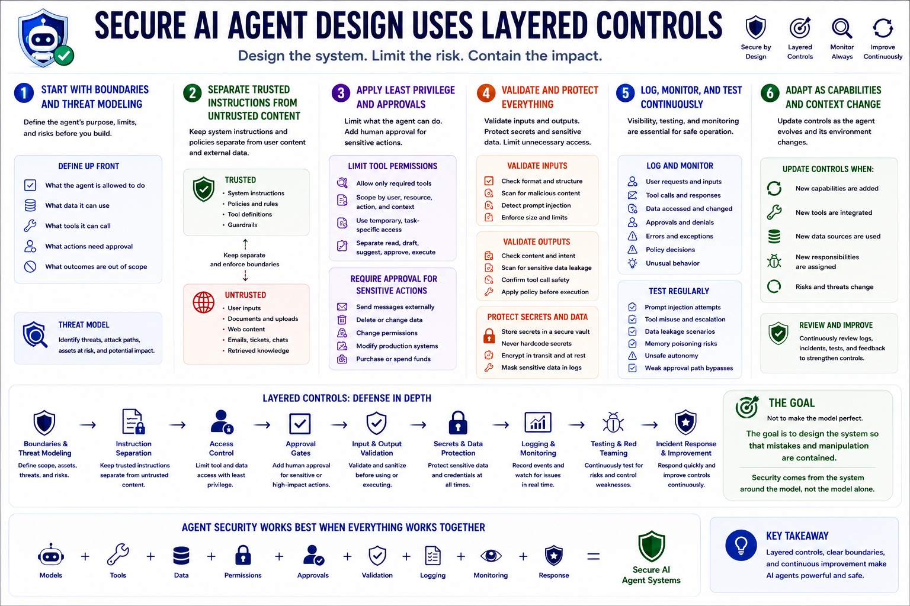

AI Agent Security
Secure Agent Design Principles
Connecting to LMS... Progress: in progress
Version 1.0 | Date: 2026-06-16 | AI agent security guidance evolves quickly. Verify current recommendations against official project, vendor, and security guidance.

Narration
Secure AI agent design uses layered controls. Start with clear task boundaries and threat modeling. Define what the agent is allowed to do, what data it can use, what tools it can call, what actions need approval, and what outcomes are out of scope.
Separate trusted instructions from untrusted content. Limit tool permissions. Require approval for sensitive actions. Validate inputs and outputs before connecting them to downstream systems. Protect secrets. Avoid giving agents unnecessary access to memory, files, databases, or production systems.
Log and monitor agent behavior. Test for prompt injection, tool misuse, data leakage, memory risk, unsafe autonomy, and weak approval paths. Update controls as the agent gains new capabilities, new tools, new data sources, or new responsibilities.
The goal is not to make the model perfect. The goal is to design the system so that mistakes and manipulation are contained. Agent security works best when models, tools, data, permissions, approvals, validation, logging, monitoring, and response are designed together.